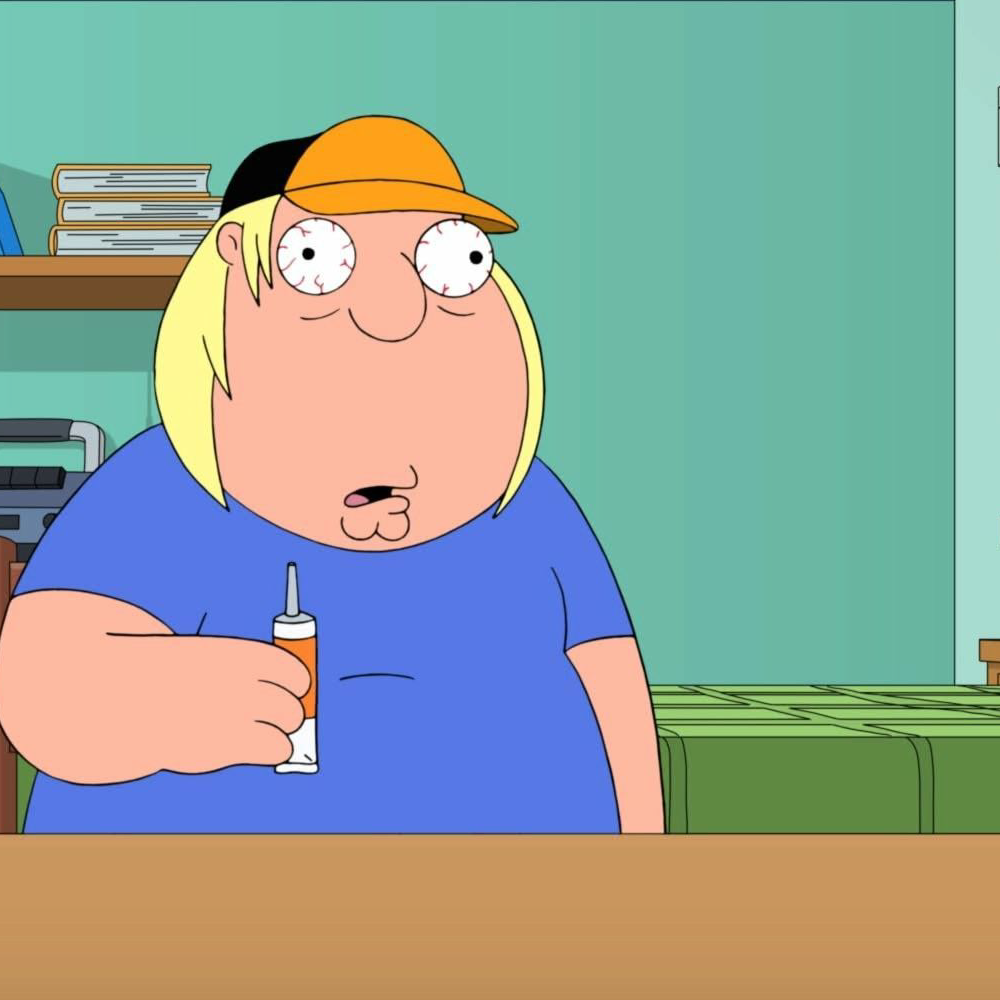

Chris Griffin is a character in the popular animated television show, "Family Guy". He is the eldest son of Peter and Lois Griffin and the older brother of Meg and Stewie. Chris is portrayed as a lovable but socially awkward teenager who is often the target of ridicule from his peers. He is overweight, clumsy, and has a tendency to say or do things that are considered strange or inappropriate. Despite his awkwardness, Chris is a very kind and caring person. He has a big heart and is always willing to help those in need. He is also very loyal to his family and will do anything to protect them. One of Chris's most defining characteristics is his love for pop culture. He is a huge fan of movies, TV shows, and video games, and often makes references to them in his everyday life. He is also very talented at drawing and often spends his free time creating his own comics and cartoons. Chris's relationship with his family is an important part of the show. While he is often the target of his father's jokes and his sister's bullying, he still loves them deeply and is always willing to stand up for them when they need him.  In terms of appearance, Chris is a tall, overweight teenager with short brown hair and glasses. He is often seen wearing a green shirt and khaki pants, and he is rarely seen without his favorite baseball cap. Despite his many positive qualities, Chris is not without his flaws. He can be naive and easily manipulated, and he often struggles to fit in with his peers. He is also very self-conscious about his weight and often feels insecure about his appearance. Throughout the show, Chris goes through many challenges and struggles, but he always manages to come out on top. Whether he's standing up to bullies, pursuing his passion for art, or trying to find his place in the world, Chris is a character that audiences can't help but root for. Overall, Chris Griffin is a complex and relatable character who embodies the struggles and triumphs of adolescence. He is a lovable and endearing character who reminds us that it's okay to be different and that true strength comes from the love and support of family and friends.